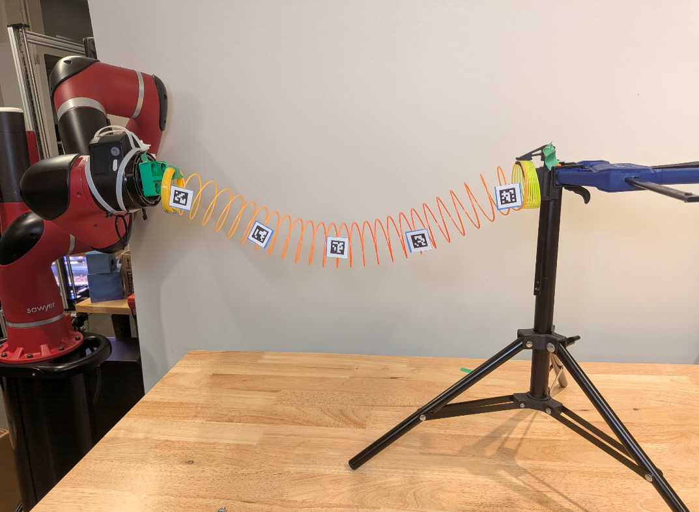
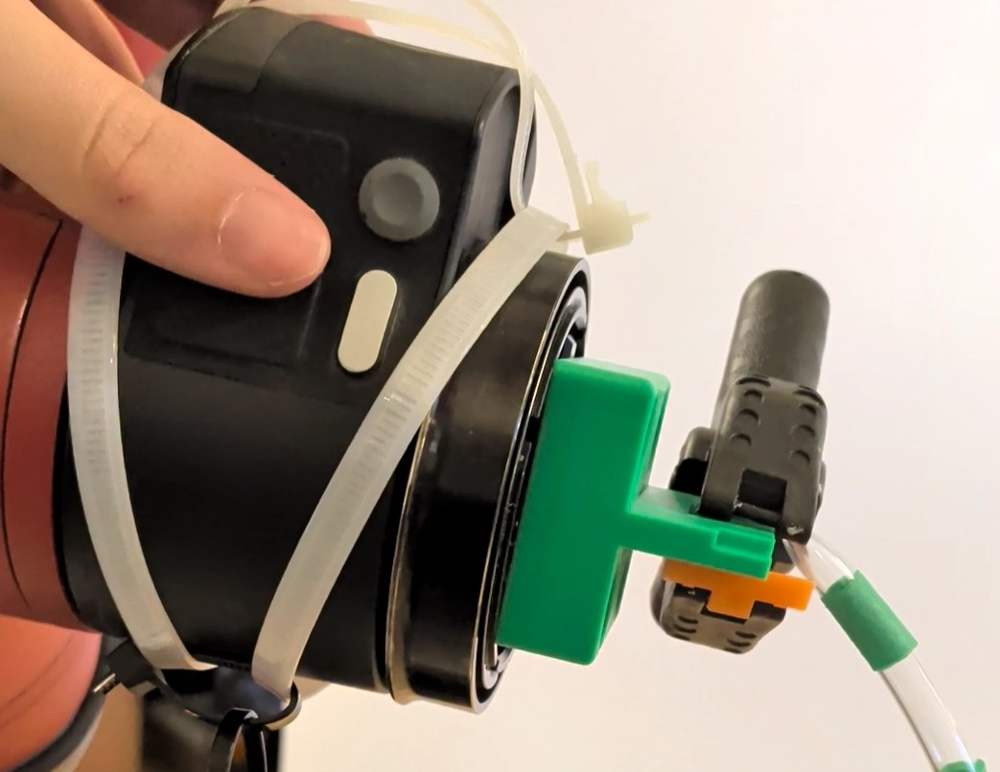
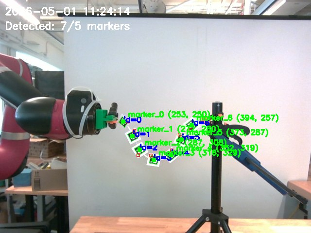
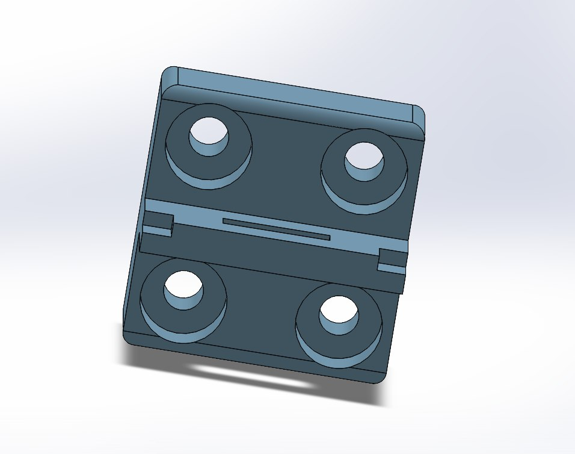
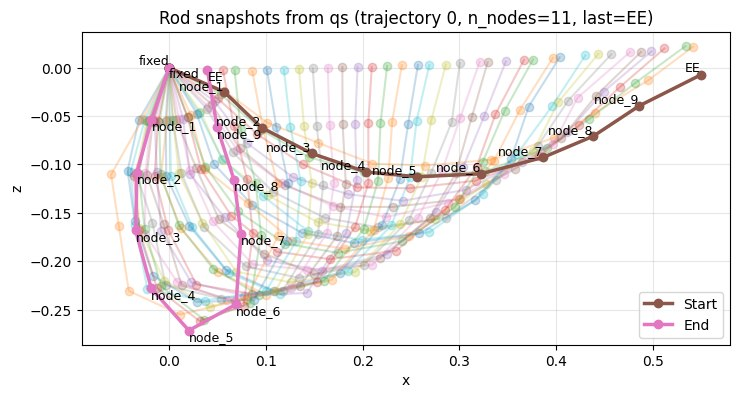
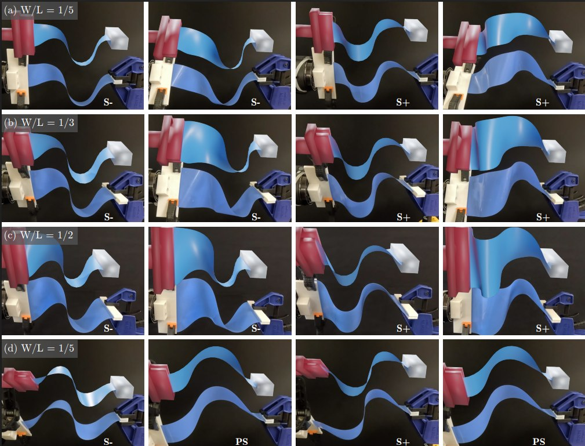
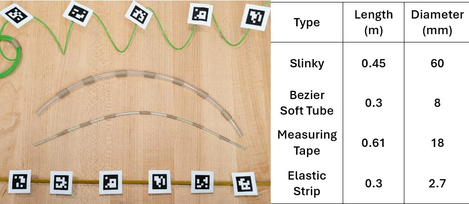
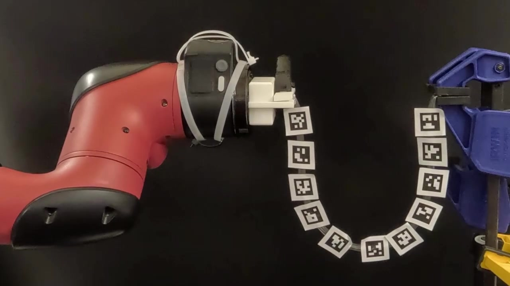

Robotic Data Acquisition for Deformable Structures
Designing automated experiments with a 7-DoF Sawyer robotic arm to study how elastic ribbons and slender structures bend, twist, buckle, and transition between equilibrium configurations.

Making nonlinear mechanics measurable.
Thin ribbons can show buckling, snap-through, bistability and bifurcations, where subtle variations in boundary conditions produce very different final shapes. Repeating these experiments by hand is slow and difficult to standardize.
Our experimental platform uses robotic motion and camera-based tracking to generate repeatable observations across shear, twist, and combined shear–twist conditions. These observations support the study and validation of computational models for deformable structures.
Hardware, motion control, and data pipelines.
- Developed and tested custom end-effector attachments and marker supports for deformable specimens.
- Extended Python and Intera SDK workflows for linear, elliptical and rotational trajectories, including replay and batch execution.
- Implemented experiment configuration serialization, automated image capture and stability-aware recording.
- Supported visual marker tracking, system calibration, synchronized robot-state logging, and dataset organization.

From controlled motion to experimental data.
Define trajectory
Execute Sawyer motion
Track fiducial markers
Record stable shapes
Each experiment combines commanded robot motions with RGB images, marker observations, pose data, stability information and metadata. Automated execution allows broader coverage of loading paths and sensitive deformation regimes.


Seeing deformation in motion.
The first clip compares the Ribbon Energy Model with the physical experiment, while the additional recordings show the standalone experimental setup in motion. Together they connect robotic actuation, visual observation, and qualitative model validation.
Repeatable measurements across different materials.




Experimental evidence for better physical models.
The data-acquisition platform supplies repeatable observations that can be compared with simulation-based descriptions of ribbons and slender structures. In the comparison clip above, the simulated response corresponds to the Ribbon Energy Model, shown alongside the physical experiment for qualitative validation. My primary contribution was building and extending the experimental infrastructure—not claiming sole development of the constitutive models.
This project combined CAD and rapid prototyping, robotics control, computer vision, automated data acquisition, and nonlinear structural mechanics in a single reproducible experimental workflow.